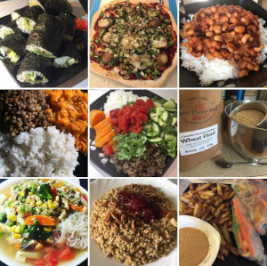

Simple stoic Plant-Based Recipes
Tested and perfected to be my no-nonsense everyday staples.
This website was created as The Odin Project assignment, but I do really
think this is a great idea to put together all my recipes, scribbled on pieces
of paper pulled out of my kitchen drawers.